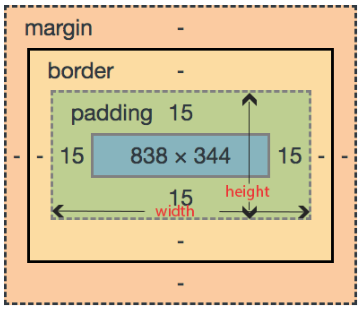
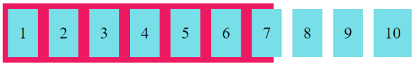
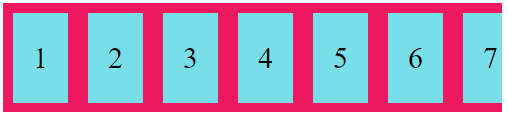
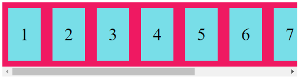
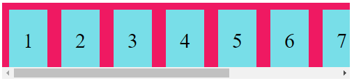
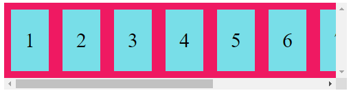

Um elemento pode se apresentar na tela como uma “caixa” (no caso de elementos com display: flex; ou display: block;, por exemplo) ou como uma “linha” (nos elementos como display: inline; por exemplo). Esses elementos possuem propriedades que os compõem e também definem como irão se apresentar e comportar na tela, os principais são:
width é a largura da parte visível do elemento, assim como height é a altura da mesmo.
padding é o espaço entre o elemento e a borda dele. Este espaço conta como uma camada interna e caso o elemento tenha uma cor de fundo, ou um preenchimento, aumentar o padding fará com que a área adicionada seja preenchida também.
border é a borda do elemento, é a fronteira entre o padding e a margin, esta pode ser customizada: https://www.w3schools.com/css/css_border.asp
margin é o espaçamento exterior do elemento, neste espaço não haverá preenchimento ou estilização, ele serve para organizar e espaçar elementos. Pode ser negativo caso haja a necessidade de sobrepor elementos.
z-index é a propriedade que define a posição de sobreposição de elementos, por exemplo, um elemento com z-index:3 ficará na frente de um elemento com z-index:2 e atrás de um elemento com z-index:4, como se fossem “camadas” na tela.
Com exceção do z-Index, todos os elementos citados acima utilizam valores com medidas, e no CSS temos dois tipos: relativas e absolutas.
As medidas absolutas são baseadas em um valor padrão, o que as tornam fixas independentemente de onde estão sendo visualizadas. Já as relativas dependem da tela onde está ocorrendo a visualização ou de outro elemento. Algumas das medidas mais comuns são:
Também podem ser usados cm ou mm.
Medidas fixas normalmente são usadas para definir elementos que independem do tamanho da tela ou são fixos, já as relativas são normalmente usadas para criar a responsividade (aliás, responsividade é o conceito de que o site poderá ser visualizado sem problemas ou quebras de layout independentemente da tela onde está sendo mostrado) do site.
overflow define o que acontece com elementos que estão dentro de outros e acabam “ultrapassando” seu tamanho, “transbordando”.
overflow: visible; deixa os elementos que “escapam” do container a mostra:
overflow: hidden; escondem os elementos que transbordam:
overflow: auto; coloca uma barra de rolagem para o lado (horizontal ou vertical) que os elementos transbordam:
overflow: overlay; coloca uma barra de rolagem para o lado (horizontal ou vertical) que os elementos transbordam, porém com a barra de rolagem ficando DENTRO do container:
overflow: scroll; adiciona barras de rolagem em ambos os lados do container (horizontal e vertical), mesmo não tendo elementos ultrapassando para algum desses sentidos:
